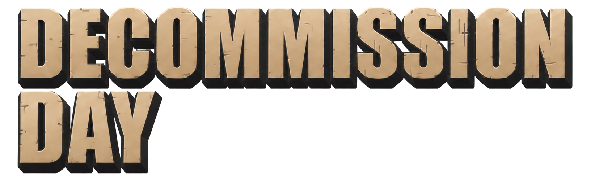

Loading
Wave 1
ARMOR
0
HEALTH
100
STAMINA
MONEY
0
1
2
3
4
Assault Rifle
150
/ 150
+
USING MEDKIT
DOWNLOADING DATA…
0%
|
DECOMMISSION DAY

Start Game
Settings
Credits
Exit
Settings
Display
Graphics Quality
Very Low
Low
Medium
High
Ultra
Applied when a mission starts. Lower tiers drop bloom and shadows first.
Audio
Music
100%
Effects
100%
Back
Credits
Back
BUILD DEV.01
DECOMMISSION DAY
Difficulty
Easy
Normal
Hard
Survival
Campaign
Back
Continue?
Yes, Continue
No, New Game
Click to Start the Action
Enters fullscreen — so Ctrl+W etc. won't close the tab
WASD
Move
Mouse
Aim
L-Click
Shoot / Use
R-Click
Move to cursor
1 2 3
Weapons
Q
Swap Weapon
4
Medkit
F
Melee
Shift
Dodge
▸ Click anywhere to begin ◂
PAUSED
RESUME
TUTORIAL
RESTART GAME
EXIT GAME
HOW TO PLAY
WASD
Move
Mouse
Aim
L-Click
Shoot / Use
R-Click
Move to cursor
1 2 3
Weapons
Q
Swap Weapon
4
Medkit
F
Melee
Shift
Dodge
Back
Yes
No
LOADING
Preparing…
GAME OVER
Money: 0
Best: 0
TOTAL TIME
00:00
LOOT BOXES DESTROYED
0
RESTART STAGE
EXIT TO MAIN MENU